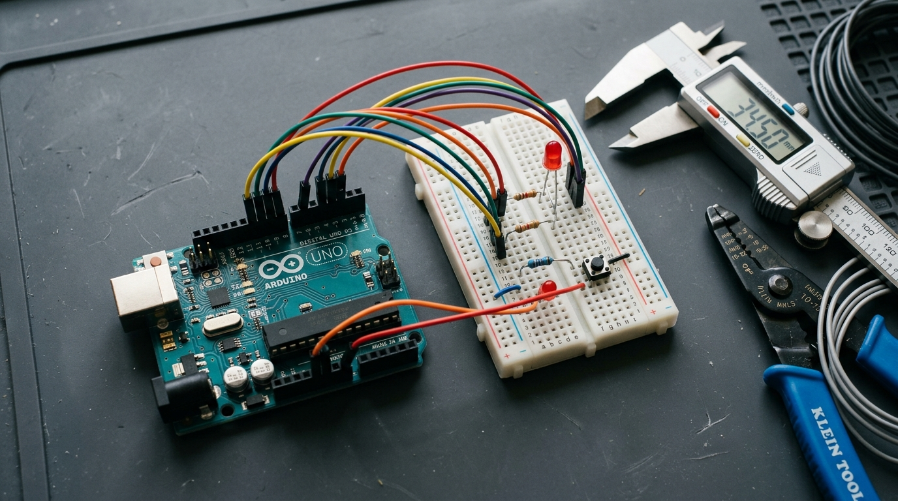

Build Hardware Like a Pro.
Mix, Match & Create.
A comprehensive, cookbook-style portfolio of Arduino building blocks. Pick any sensor, combine it with an actuator, wire it with step-by-step ASCII guides, and paste production-ready sketches to make your dream project.

Six Pillars of Physical Computing
Progress from elementary digital logic to intelligent autonomous robotics. Click any category to filter the recipe catalog.
The Project Recipe Mixer
Select your available components below to synthesize instant project recipes, wiring instructions, and estimated difficulty.
Synthesizing Recipe...
Combine these components to build an interactive smart device.
Explore All 31 Projects
Search by keyword, filter by category, or open any card to view detailed circuit schematics, pin tables, and commented code.
The Modular Architecture
How building blocks interconnect seamlessly inside the Arduino ecosystem.
1. Inputs & Sensing
Sonar, Infrared, Temperature, Humidity, LDR, IMU, Laser Distance
2. Processing Core
Arduino Uno / Nano / ESP32 with Non-Blocking State Machines & Protocols
3. Outputs & Displays
Servos, DC Motors, Steppers, Relays, NeoPixels, 16x2 LCDs, 7-Segments
Behind the Cookbook
This repository is a curated compilation of real-world hardware projects, prototypes, and laboratory experiments built, wired, and verified with love for open-source physical computing.
Every sketch is written with clean indentation, non-blocking timers, and zero-compromise documentation so anyone from an elementary student to an embedded systems engineer can pick up these modules and invent something remarkable.
Ready to start building?
Clone the repository, open your Arduino IDE, and wire your first project in minutes.
git clone https://github.com/PrerithM/Arduino-Projects.git